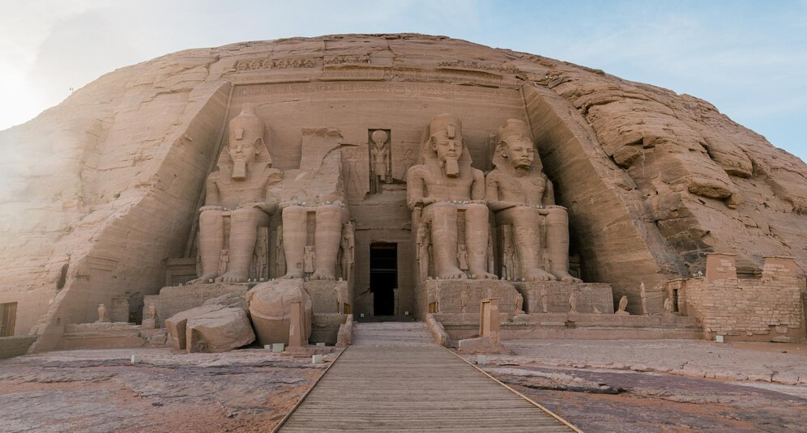
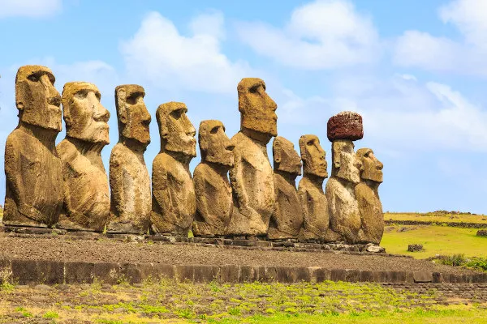

Buenos Aires, Argentina
Buenos Aires é a vibrante capital da Argentina, é um destino fascinante que oferece uma ampla gama de experiências culturais, históricas e gastronômicas. Aqui estão alguns motivos convincentes para conhecer esta cidade incrível:
- Cultura e História Ricas: Buenos Aires é conhecida por sua arquitetura impressionante, que mistura estilos europeus com influências locais. A cidade abriga museus renomados como o Museu Nacional de Belas Artes e o Museu de Arte Latino-Americana de Buenos Aires.
- Vida Noturna Vibrante: Buenos Aires é famosa por sua vida noturna, com uma abundância de bares, clubes e restaurantes que oferecem uma variedade de opções gastronômicas e de entretenimento.
- Vida ao Ar Livre: A cidade possui belos parques como o Parque Tres de Febrero e a Praça de Maio, onde você pode relaxar e desfrutar do ambiente urbano.
- Acessibilidade: Buenos Aires possui uma boa infraestrutura de transporte, incluindo uma extensa rede de ônibus e o metrô, facilitando a locomoção pela cidade. Além de oferecer uma ampla gama de opções de hospedagem, desde hotéis luxuosos até albergues e apartamentos.
Abu Simbel – Egito
Abu Simbel é um dos destinos mais fascinantes e impressionantes do Egito, conhecido por seus templos espetaculares e sua rica história. Aqui estão alguns motivos convincentes para visitar Abu Simbel:
- Templos Monumentais de Ramsés II: Os templos de Abu Simbel, esculpidos na rocha durante o reinado do faraó Ramsés II no século XIII a.C., são uma maravilha arquitetônica.O interior dos templos é decorado com intricadas hieróglifos e cenas que ilustram as vitórias e a vida de Ramsés II, proporcionando um vislumbre da arte e da cultura egípcia antiga.
- O Efeito do Alinhamento Solar: Dois vezes por ano, em 22 de fevereiro e 22 de outubro, a luz do sol entra no templo principal e ilumina as estátuas de Ramsés II e dos deuses Amon e Ra-Horakhty. Esse fenômeno foi projetado para coincidir com os equinócios e é uma experiência deslumbrante para os visitantes.
- Cenário Deslumbrante: Situado na margem do Lago Nasser, o cenário ao redor de Abu Simbel é de tirar o fôlego. O contraste entre os templos esculpidos na rocha e o vasto deserto é uma vista impressionante, especialmente ao amanhecer e ao entardecer.
- Viagem Inesquecível: A viagem até Abu Simbel, que normalmente é feita por voo ou ônibus a partir de Aswan, oferece uma experiência de viagem única, cruzando o deserto egípcio e testemunhando a vastidão e a beleza da paisagem árida.
Ilha de Páscoa – Chile
A Ilha de Páscoa, ou Rapa Nui, é um dos destinos mais fascinantes e remotos do mundo, conhecida por sua rica história, cultura única e paisagens deslumbrantes. Aqui estão alguns motivos convincentes para visitar este lugar extraordinário:
- Estátuas Moai: As estátuas Moai são as principais atrações da Ilha de Páscoa. Essas esculturas monumentais, com cabeças grandes e corpos esculpidos em rochas vulcânicas, são um testemunho impressionante da habilidade e do mistério da antiga civilização Rapa Nui.
- Cultura e História Única: A ilha possui uma rica herança cultural com uma história fascinante de colonização, desenvolvimento e desafios. Explorar a cultura local inclui aprender sobre a língua Rapa Nui, tradições e rituais.
- Belezas Naturais e Paisagens: A Ilha de Páscoa possui praias pitorescas e águas cristalinas, como a Praia de Anakena, que é ideal para relaxar e nadar. O Lago Rano Raraku e o vulcão Rano Kau também oferecem vistas espetaculares.
- Aventura e Atividades ao Ar Livre: A ilha oferece várias trilhas para caminhadas que levam a pontos panorâmicos, como o cráter do vulcão Rano Kau e a montanha Terevaka, que proporciona vistas incríveis da ilha e do oceano.